Campo electrostático conservativo
$$\oint \vec E\cdot d\vec l = 0 \;\Longrightarrow\; \sum_{\text{lazo}} \Delta V = 0$$El potencial depende solo del punto, igual que la altura en un cerro. De ahí sale la LVK (módulo 2.4).
Cada módulo parte por la física de campos, plantea las ecuaciones antes de tocar el álgebra, trae un laboratorio para mover parámetros y termina con un ejercicio tipo certamen. La pauta de ese ejercicio se abre solo después de que escribas tu planteamiento.
El potencial depende solo del punto, igual que la altura en un cerro. De ahí sale la LVK (módulo 2.4).
La carga no se acumula en un nodo. De ahí sale la LCK (módulo 2.3).
Corrientes de malla horarias, tensiones de nodo respecto de tierra y referencia pasiva para la potencia: si \(p = v\,i > 0\) el elemento absorbe energía. Son las mismas del Cap. 3 y de la guía del curso.
Resuelve en papel, como en la prueba. Escribe en el recuadro las ecuaciones que planteaste, con signos, y recién ahí se habilita la pauta. Si tu número no coincide, busca el paso donde te separaste.
Al final de cada módulo puedes marcarlo como estudiado. El avance y tus borradores quedan guardados solo en este navegador.
De los electrones de conducción a \(V_{ab} = RI\), con los mismos nombres y símbolos de tu Cap. 3.
Este módulo usa los símbolos del Cap. 3, para que lo que escribas en la prueba coincida con lo que espera tu profesor.
| Símbolo | Nombre en el curso | Unidad |
|---|---|---|
| \(\rho_e\) | densidad de electrones de conducción (es una densidad de carga, de valor negativo) | C/m³ |
| \(\vec U_d\) | velocidad de deriva | m/s |
| \(\mu_e\) | movilidad del electrón | m²/(V·s) |
| \(\vec J\) | densidad de corriente | A/m² |
| \(\sigma\) | conductividad | S/m |
| \(\rho_\Omega\) | resistividad, \(\rho_\Omega = 1/\sigma\) | Ω·m |
| \(S\) | sección del conductor | m² |
Ojo con las dos letras ρ: \(\rho_e\) es carga por volumen y \(\rho_\Omega\) es resistividad. El curso les pone subíndice justamente para no confundirlas.
Tu Cap. 3 (lámina 10) separa los materiales en dos grupos. Los conductores, como los metales, contienen electrones de conducción, también llamados electrones libres: tienen enlaces débiles con su núcleo y pueden moverse por todo el material. En el cobre, cada átomo aporta más o menos uno. Los aislantes, como el plástico, el papel, la mica o el aire, tienen electrones con un enlace muy fuerte con sus núcleos y no tienen libertad de movimiento.
Los electrones de conducción del cobre se mueven todo el tiempo, del orden de \(10^{6}\) m/s, por agitación térmica, pero en direcciones al azar. Por cada electrón que cruza una sección hacia la derecha, otro la cruza hacia la izquierda, y el flujo neto de carga es cero. Que haya cargas moviéndose no significa que haya corriente: hay corriente cuando existe un movimiento neto en una dirección.
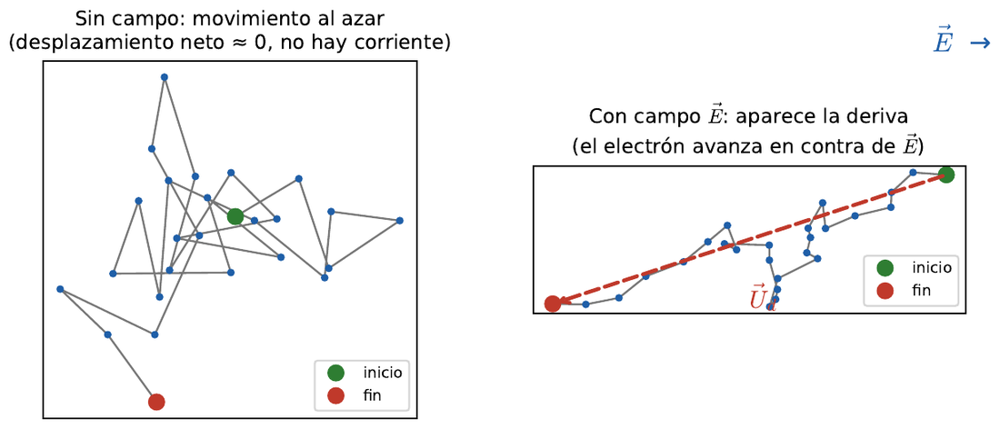
Al conectar el cable a una fuente aparece un campo \(\vec E\) dentro del conductor. Por la ley de Coulomb cada electrón siente una fuerza (lámina 13):
$$\vec F = -q_e\,\vec E$$El signo menos está porque la carga del electrón es negativa: la fuerza apunta en contra del campo. En el vacío esa fuerza lo aceleraría sin parar. Dentro del metal, el electrón acelera, choca, pierde lo ganado y vuelve a empezar. Encima del movimiento caótico aparece una velocidad promedio pequeña en una dirección, la velocidad de deriva. Tu Cap. 3 dice que es proporcional al campo, y llama movilidad a la constante:
$$\vec U_d = -\mu_e\,\vec E \qquad [\mathrm{m/s}]$$La movilidad es propia de cada material: con movilidad alta, el mismo campo produce más deriva. Piensa en una multitud que sale de un estadio por un pasillo. Cada persona camina, se detiene y choca con otra, pero la multitud entera avanza despacio hacia la salida. La deriva es ese avance lento, no la rapidez de cada persona.
Los electrones de conducción van hacia el potencial más alto, en contra del campo. Mover cargas negativas en un sentido produce el mismo efecto eléctrico que mover cargas positivas en el sentido contrario, por eso se usa la corriente convencional: se dibuja como si se movieran cargas positivas, del potencial alto al bajo, en el mismo sentido de \(\vec E\) (lámina 11).
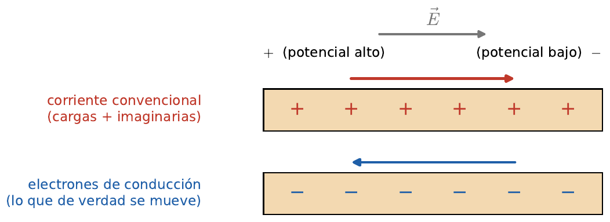
El curso también separa la corriente de conducción, el movimiento de electrones dentro de un conductor (la que estudiamos en circuitos), de la corriente de convección, el movimiento de cargas libres por el espacio, como el haz de electrones de un tubo de rayos catódicos.
La intensidad de corriente mide cuánta carga cruza una sección por unidad de tiempo, \(I = dQ/dt\). Para hablar de lo que pasa en cada punto se usa la densidad de corriente; si es uniforme sobre la sección \(S\):
$$I = \int_S \vec J\cdot d\vec s = J\,S \;\Longrightarrow\; J = \frac{I}{S}\quad[\mathrm{A/m^2}]$$Ahora con los electrones. En un tiempo \(dt\) cruzan la sección los que están a menos de \(U_d\,dt\) de ella, es decir, los que caben en el volumen \(S\,U_d\,dt\):
$$dQ = \rho_e\,(S\,U_d\,dt) \;\Rightarrow\; I = \rho_e U_d S \;\Rightarrow\; \vec J = \rho_e\,\vec U_d$$Es la relación de la lámina 14. Piensa en un peaje: los autos que pasan por segundo dependen de cuántos hay por kilómetro (\(\rho_e\)), de qué tan rápido avanzan (\(U_d\)) y de cuántas pistas tiene la carretera (\(S\)). Revisa el signo: \(\rho_e\) es negativa y \(\vec U_d\) apunta contra el campo, así que \(\vec J\) queda en el sentido de \(\vec E\), igual que la corriente convencional.
Reemplazando \(\vec U_d = -\mu_e\vec E\) en \(\vec J = \rho_e\vec U_d\):
$$\vec J = -\rho_e\mu_e\,\vec E, \qquad \sigma = -\rho_e\,\mu_e\ \ [\mathrm{S/m}] \;\Longrightarrow\; \vec J = \sigma\,\vec E$$El signo menos compensa que \(\rho_e\) es negativa, así que \(\sigma\) es positiva. La conductividad depende de cuántos electrones de conducción hay y de qué tan fácil se mueven. Valores de tu curso (lámina 14): aluminio \(3{,}72\times10^{7}\), cobre \(5{,}8\times10^{7}\) y plata \(6{,}17\times10^{7}\) S/m.
Es el paso de la lámina 18. Un trozo de conductor de largo \(L\) y sección uniforme \(S\), con \(V_{ab}\) entre sus extremos y \(\vec E\), \(\vec J\) uniformes:
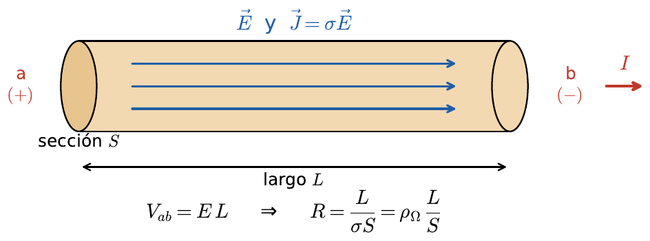
Llegamos a \(V_{ab} = RI\). Tu curso también la escribe \(I = G\,V_{ab}\), con la conductancia \(G = 1/R\) en siemens. \(R\) depende solo de la forma (\(L\) y \(S\)) y del material (\(\sigma\)), no de la corriente ni del voltaje. Más largo, más recorrido con choques; más grueso, más espacio para pasar.
Un alambre de cobre de 1 m de largo y 1 mm² de sección conduce 1 A. Calcula su resistencia, el campo dentro del alambre, la velocidad de deriva de los electrones y su movilidad. Datos: \(\sigma_{Cu} = 5{,}8\times10^{7}\) S/m (lámina 14), \(S = 10^{-6}\) m², y unos \(8{,}5\times10^{28}\) electrones de conducción por m³, cada uno con carga \(-1{,}602\times10^{-19}\) C.
Primero la densidad de carga de los electrones de conducción, con su signo:
$$\rho_e = -8{,}5\times10^{28}\cdot 1{,}602\times10^{-19} \approx -1{,}36\times10^{10}\ \mathrm{C/m^3}$$Con eso, \(R = L/(\sigma S)\), \(J = I/S\), \(E = J/\sigma\), \(U_d = J/\rho_e\) y \(\mu_e = -\sigma/\rho_e\).
\(U_d = -\mu_e E = -4{,}3\times10^{-3}\cdot 0{,}0172 \approx -7{,}3\times10^{-5}\) m/s. Coincide, y el signo negativo dice que los electrones avanzan contra el campo. La resistencia es tan pequeña que en circuitos los cables se tratan como ideales.
Un electrón tardaría casi 4 horas en recorrer ese metro, y aun así la ampolleta se enciende al instante: lo que viaja rápido es el campo, que se establece en todo el cable casi a la velocidad de la luz. Es como una manguera llena de agua: al abrir la llave sale agua por la punta de inmediato, aunque no sea la que acaba de entrar.
La conductividad es \(\sigma = -\rho_e\mu_e\) y los dos factores cambian con la temperatura en sentidos opuestos (láminas 14 y 15). Al calentar, \(\rho_e\) sube, porque más electrones pasan de la banda de valencia a la de conducción, pero \(\mu_e\) baja, porque la agitación de la red los frena más. En los metales gana la movilidad: la conductividad baja y la resistencia sube. El filamento frío de una ampolleta incandescente tiene una resistencia unas diez veces menor que encendido. A temperaturas muy bajas la movilidad aumenta muchísimo y algunos materiales llegan a la superconductividad.
Según la lámina 17, en cada medio la corriente la transportan partículas distintas:
| Medio | Quién transporta la corriente |
|---|---|
| Metales | electrones de conducción |
| Semiconductores | electrones y huecos (portadores de corriente, lámina 40) |
| Líquidos ionizados (agua salada, electrolito de una batería) | iones positivos y negativos |
| Gases ionizados o plasma (relámpago, tubo fluorescente) | iones y electrones |
En un semiconductor los dos portadores se mueven en sentidos opuestos y sus aportes se suman: \(\sigma_{sc} = -\rho_e\mu_e + \rho_h\mu_h\).
Dentro de una resistencia la corriente convencional va del potencial alto al bajo. Una carga \(q\) que la atraviesa pierde la energía potencial \(qV_{ab}\) y la entrega a la red cristalina en los choques: la resistencia se calienta (efecto Joule).
$$P = \frac{dW}{dt} = \frac{dQ}{dt}V_{ab} = V_{ab}I = I^2R = \frac{V_{ab}^2}{R}$$De aquí sale el término \(-IR\) que usarás en la 2.4 al recorrer una malla en el sentido de la corriente: al cruzar una resistencia se baja de potencial porque la carga entregó energía como calor.
Parte con cobre, 1 m, S = 1 mm² e I = 1 A: obtienes los números del ejemplo. Duplica la sección y R baja a la mitad. La animación exagera la deriva para que se vea.
Se necesita alimentar un equipo que consume 5 A con una línea de aluminio (\(\sigma = 3{,}72\times10^{7}\) S/m, lámina 14) de 50 m. La caída de tensión en la línea no puede superar 1 V.
La caída máxima fija la resistencia máxima. Para la parte d, piensa qué pasa con \(R\) si solo cambia \(\sigma\).
a) \(V_{ab} = RI \le 1\) V da \(R_{\max} = 0{,}2\ \Omega\). Entonces \(S = L/(\sigma R) = 50/(3{,}72\times10^{7}\cdot 0{,}2) = 6{,}72\times10^{-6}\ \mathrm{m^2}\) y \(d = 2\sqrt{S/\pi} = 2{,}93\) mm.
b) \(E = V_{ab}/L = 1/50 = 0{,}02\) V/m.
c) \(P = V_{ab}I = 5\) W.
d) Con la misma geometría \(R \propto 1/\sigma\): \(R_{Cu} = 0{,}2\cdot 3{,}72/5{,}8 = 0{,}128\ \Omega\) y la caída queda en \(0{,}641\) V.
Error típico: usar \(S = \pi d^2\). El diámetro no es el radio.
Si el campo electrostático es conservativo, algo distinto tiene que subir a las cargas de vuelta. Ese algo es la fem.
Piensa en una noria de agua: el agua baja sola por la canaleta, pero alguien tiene que subirla de nuevo. En un circuito, las cargas pierden energía en cada resistencia. Como \(\oint \vec E\cdot d\vec l = 0\), el campo electrostático por sí solo no puede devolverles esa energía en un lazo cerrado.
Dentro de la batería actúa una fuerza por unidad de carga \(\vec f_s\) de origen químico, que empuja las cargas positivas desde el terminal negativo al positivo, contra el campo. La fem es el trabajo que hace esa fuerza por coulomb:
$$\varepsilon = \oint \vec f_s\cdot d\vec l = \int_{-}^{+} \vec f_s\cdot d\vec l \qquad [\mathrm{V}]$$La ley de Ohm completa dentro de cualquier conductor es \(\vec J = \sigma(\vec E + \vec f_s)\). En la batería real, parte del trabajo químico se pierde en su propia resistencia interna \(r\). Por eso la tensión en los bornes baja cuando aumenta la corriente:
$$V_{ab} = \varepsilon - I r$$Balance de energía multiplicando por \(I\): \(\varepsilon I = I^2 r + V_{ab} I\). La batería entrega \(\varepsilon I\); una parte calienta la batería y el resto llega al circuito externo.
Una batería de \(\varepsilon = 12\) V y \(r = 0{,}5\ \Omega\) alimenta una resistencia de \(5{,}5\ \Omega\). Encuentra la corriente, la tensión en bornes y el balance de potencia.
Recorre el lazo en sentido horario partiendo de b. Subes \(\varepsilon\) en la fuente, bajas \(Ir\) en la resistencia interna y bajas \(IR\) en la carga, y vuelves a b:
$$+\varepsilon - I r - I R = 0$$Lleva R hasta igualar r: la potencia en la carga es máxima, pero la eficiencia cae a 50 %. Por eso las redes de distribución no trabajan en máxima transferencia.
Una batería de fem \(\varepsilon\) y resistencia interna \(r\) desconocidas se conecta a distintas resistencias. Con \(R_1 = 5{,}8\ \Omega\) el voltaje en bornes es 11,6 V. Con \(R_2 = 2{,}7\ \Omega\) el voltaje en bornes es 10,8 V.
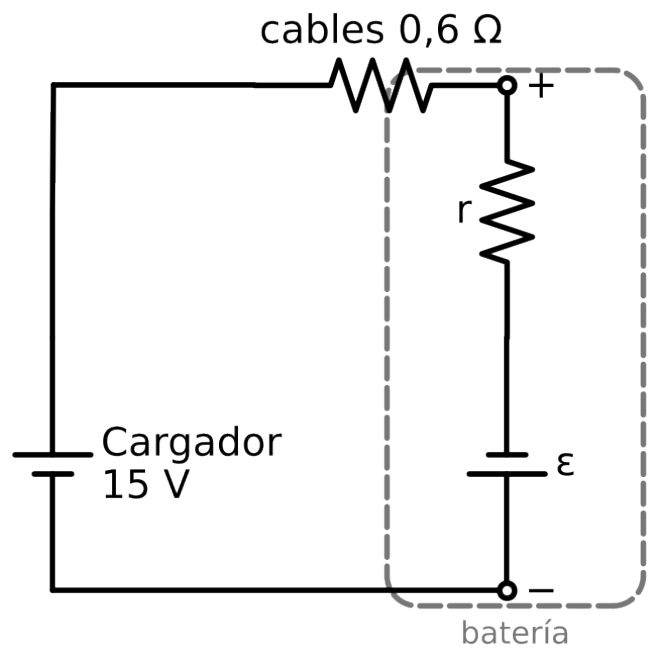
a) Corrientes: \(I_1 = 11{,}6/5{,}8 = 2\) A e \(I_2 = 10{,}8/2{,}7 = 4\) A. En cada caso el voltaje en bornes es la fem menos la caída interna (LVK recorriendo la batería por dentro): \(\varepsilon - 2r = 11{,}6\) y \(\varepsilon - 4r = 10{,}8\).
b) Restando: \(2r = 0{,}8\), así que \(r = 0{,}4\ \Omega\) y \(\varepsilon = 12{,}4\) V.
c) Con \(R_2\) e \(I = 4\) A: la fem entrega \(12{,}4\cdot 4 = 49{,}6\) W, en \(r\) se disipan \(4^2\cdot 0{,}4 = 6{,}4\) W y en la carga \(4^2\cdot 2{,}7 = 43{,}2\) W. Eficiencia: \(43{,}2/49{,}6 \approx 87{,}1\ \%\).
d) \(I_{cc} = 12{,}4/0{,}4 = 31\) A. Toda la energía se disipa dentro de la batería, en \(r\).
e) Las dos fems se oponen en el lazo. Recorriendo en el sentido de la corriente que empuja el cargador: \(15 - 0{,}6I - 0{,}4I - 12{,}4 = 0 \Rightarrow I = 2{,}6\) A. La corriente entra a la batería por su borne +. Voltaje en bornes: \(12{,}4 + 2{,}6\cdot 0{,}4 = 13{,}44\) V. Potencia almacenada como energía química: \(12{,}4\cdot 2{,}6 = 32{,}24\) W. Con referencias asociadas la corriente entra por el +, así que \(p = 13{,}44\cdot 2{,}6 > 0\): la batería recibe energía.
Error común: usar \(V = \varepsilon - Ir\) cuando la batería se carga. Si la corriente entra por el +, es \(V = \varepsilon + Ir\).
Al probar una batería, un voltímetro ideal marca 8,7 V entre sus bornes cuando entrega 1 A, y 8,1 V cuando entrega 3 A.
Escribe \(V_{ab} = \varepsilon - Ir\) para cada medición. Son dos ecuaciones con dos incógnitas.
a) Restando las ecuaciones: \(0{,}6 = 2r\), así que \(r = 0{,}3\ \Omega\) y \(\varepsilon = 8{,}7 + 0{,}3 = 9{,}0\) V.
b) \(R = V_{ab}/I = 8{,}1/3 = 2{,}7\ \Omega\).
c) Máxima transferencia en \(R = r = 0{,}3\ \Omega\): \(P_{\max} = \varepsilon^2/(4r) = 81/1{,}2 = 67{,}5\) W.
d) \(I_{cc} = \varepsilon/r = 30\) A. Toda la energía \(\varepsilon I = 270\) W se disipa dentro de la batería, que se calienta.
Lo que entra a un nodo, sale. Es la conservación de la carga escrita para régimen permanente.
Encierra un nodo con una superficie cerrada. La carga que sale por unidad de tiempo tiene que ser igual a lo que disminuye la carga encerrada. Esa es la ecuación de continuidad:
$$\oint_S \vec J\cdot d\vec S = -\frac{dQ_{enc}}{dt}$$En un circuito DC el nodo no acumula carga. Si acumulara, crecería un campo que frenaría la corriente que llega y empujaría la que sale. En el cobre esa carga se redistribuye en tiempos del orden de \(\varepsilon_0/\sigma \approx 10^{-19}\) s. Con \(dQ/dt = 0\):
$$\sum_{\text{entran}} I = \sum_{\text{salen}} I$$La ley no depende de qué elementos llegan al nodo. Vale igual para resistencias, fuentes o diodos. La superficie tampoco tiene que encerrar un solo nodo: puede encerrar un pedazo completo del circuito. Esa idea es la base del supernodo del módulo 2.7.
En el capacitor la corriente de conducción no cruza el dieléctrico. La LCK sigue valiendo porque entre las placas circula la corriente de desplazamiento \(\varepsilon\,\partial E/\partial t\) (Cap. 8, Ampère-Maxwell).
En el circuito, encuentra la tensión del nodo a, la corriente en cada rama y verifica el balance de potencia.
Hay un solo nodo con tensión desconocida, \(V_a\). Expreso cada corriente que sale del nodo con la ley de Ohm. Por \(R_1\) sale \(V_a/R_1\). Por la rama de \(R_2\) sale \((V_a - \varepsilon)/R_2\), porque la parte de abajo de \(R_2\) está a \(\varepsilon\) volts. La fuente de corriente inyecta \(I_s\).
$$\frac{V_a}{4} + \frac{V_a - 12}{6} = 2$$Entran \(2 + 0{,}4 = 2{,}4\) A y salen 2,4 A. Potencias: la fuente de corriente entrega \(2\cdot 9{,}6 = 19{,}2\) W, la de tensión \(12\cdot 0{,}4 = 4{,}8\) W. Las resistencias absorben \(23{,}04 + 0{,}96 = 24\) W.
Baja ε a cero: la corriente de esa rama se invierte y la fuente pasa a absorber energía. La balanza sigue cuadrando.
En el circuito de la figura, la fuente de corriente \(I_s = 3\) A entrega corriente al nodo a. La rama central tiene una resistencia \(R_2 = 2\ \Omega\) en serie con una batería ideal de fem \(\varepsilon = 10\) V, con el borne + hacia el nodo a. Además, \(R_1 = 4\ \Omega\) y \(R_3 = 12\ \Omega\).
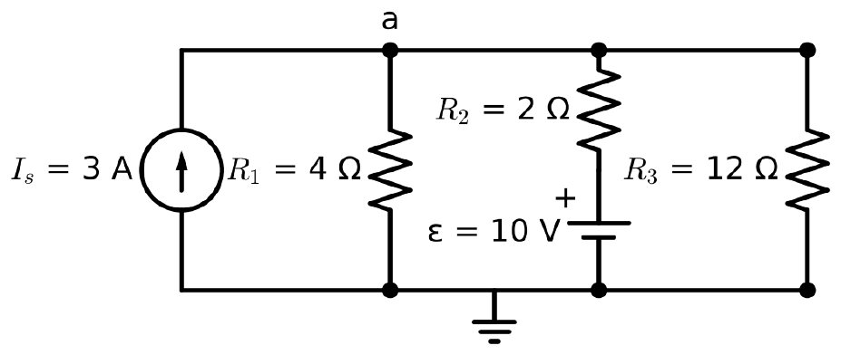
a) Dos nodos: a y tierra. Una ecuación de LCK. Sale de la conservación de la carga en régimen estacionario: la carga en el nodo no cambia, así que lo que entra es igual a lo que sale.
b) Corrientes bajando por cada rama: \(I_1 = V_a/4\), \(I_2 = (V_a - 10)/2\), \(I_3 = V_a/12\). LCK: \(3 = \dfrac{V_a}{4} + \dfrac{V_a - 10}{2} + \dfrac{V_a}{12} \Rightarrow V_a = 9{,}6\) V.
c) \(I_1 = 2{,}4\) A bajando, \(I_3 = 0{,}8\) A bajando, \(I_2 = -0{,}2\) A: en realidad sube 0,2 A por la rama de la batería y entra al nodo a. La corriente sale por el borne + de la batería, así que la batería entrega energía.
d) Entregan: la fuente de corriente \(3\cdot 9{,}6 = 28{,}8\) W y la batería \(10\cdot 0{,}2 = 2\) W. Total 30,8 W. Disipan: \(23{,}04 + 0{,}08 + 7{,}68 = 30{,}8\) W.
e) Sin corriente en la batería, \(V_a = 10\) V. Entonces \(I_s = \dfrac{10}{4} + \dfrac{10}{12} = \dfrac{10}{3} \approx 3{,}33\) A.
En el circuito, la fuente de corriente inyecta 6 A al nodo a.
En la rama de la derecha, el extremo inferior de la resistencia de 2 Ω está a 4 V respecto de tierra.
a) \(\dfrac{V_a}{3} + \dfrac{V_a}{6} + \dfrac{V_a - 4}{2} = 6 \Rightarrow V_a\left(\tfrac13 + \tfrac16 + \tfrac12\right) = 6 + 2 \Rightarrow V_a = 8\) V.
b) Por 3 Ω bajan 2,67 A; por 6 Ω bajan 1,33 A; por la rama de 2 Ω bajan \((8-4)/2 = 2\) A. Suma: 6 A.
c) Los 2 A entran por el terminal positivo de la fuente de 4 V. Con referencia pasiva \(p = 4\cdot 2 = 8\) W absorbidos: la fuente se está cargando.
d) Entregada: \(6\cdot 8 = 48\) W. Absorbida: \(21{,}33 + 10{,}67 + 8\) (2 Ω) \(+ 8\) (fuente) \(= 48\) W.
Si sales de tu casa, das vueltas por el cerro y vuelves a la puerta, tu cambio de altura total es cero. Con el potencial pasa lo mismo.
El Cap. 2 define la diferencia de potencial como el trabajo por unidad de carga para llevar una carga de prueba de A a B:
$$V_B - V_A = -\int_A^B \vec E\cdot d\vec l$$Para el campo electrostático esa integral no depende del camino. Si vuelves al punto de partida, la integral cerrada es cero. Marca puntos a, b, c, ... sobre un lazo del circuito y suma las diferencias de potencial de cada tramo:
$$(V_b - V_a) + (V_c - V_b) + \dots + (V_a - V_n) = 0$$Los términos se cancelan de a pares y queda la LVK. No hizo falta saber qué elementos hay en el lazo, solo que cada punto tiene un único potencial.
Lectura energética: si recorres el lazo con una carga \(q\), la fuente le sube la energía en \(q\varepsilon\) y cada resistencia se la baja en \(qIR\). La LVK dice que la energía que entregan las fuentes es igual a la que se disipa.
Para escribir la ecuación sin errores usa una regla y no la cambies durante la prueba. Recorriendo el lazo: al atravesar una fuente de − a + sumas \(+\varepsilon\); al atravesar una resistencia en el mismo sentido de la corriente sumas \(-IR\).
Encuentra la corriente del lazo y la diferencia de potencial \(V_c - V_a\) por los dos caminos posibles. Comprueba el balance de energía.
Supongo \(I\) en sentido horario. Parto de a: subo por \(\varepsilon_1\) de − a +, cruzo \(R_1\), cruzo \(\varepsilon_2\) de + a − (bajo), cruzo \(R_2\) y \(R_3\):
$$+15 - 2I - 4 - 5I - 3I = 0$$Por b: \(V_c - V_a = +15 - 1{,}1\cdot 2 = 12{,}8\) V.
Por e y d, contra la corriente: \(+1{,}1\cdot 3 + 1{,}1\cdot 5 + 4 = 12{,}8\) V. En \(R_3\) y \(R_2\) subes porque vas contra la corriente, y en \(\varepsilon_2\) subes porque la cruzas de − a +.
\(\varepsilon_1\) entrega \(15\cdot 1{,}1 = 16{,}5\) W. \(\varepsilon_2\) recibe corriente por su terminal + y absorbe \(4{,}4\) W. Las resistencias disipan \(1{,}1^2\cdot 10 = 12{,}1\) W. \(16{,}5 = 4{,}4 + 12{,}1\).
Haz ε₂ mayor que ε₁: la corriente se invierte y las resistencias pasan a subir el potencial en el sentido del recorrido. El gráfico siempre termina en 0.
Las preguntas marcadas con (lección) se refieren al ejemplo o a los pasos del PDF de la lección.
El circuito de la figura es un solo lazo con esquinas a, b, c y d. Los datos son \(\varepsilon_1 = 15\) V, \(\varepsilon_2 = 5\) V, \(\varepsilon_3 = 4\) V, \(R_1 = 2\ \Omega\), \(R_2 = 3\ \Omega\) y \(R_3 = 5\ \Omega\). Las polaridades de las fuentes están marcadas con el signo + junto a la placa larga.
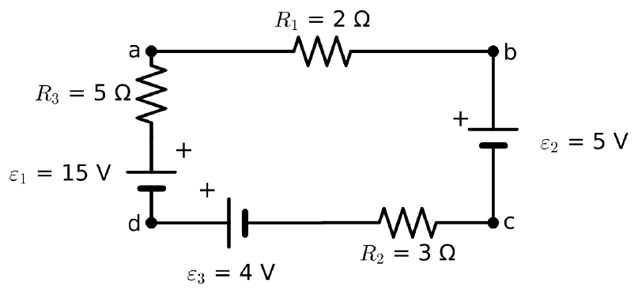
a) Corriente \(I\) y recorrido, ambos en sentido horario (d → a → b → c → d). \(\varepsilon_1\), subiendo desde d: +15 (de − a +). \(R_3\): \(-5I\). \(R_1\): \(-2I\). \(\varepsilon_2\), bajando de b a c: −5 (de + a −). \(R_2\): \(-3I\). \(\varepsilon_3\), hacia d: +4 (de − a +, el + está junto a d). $$15 - 5I - 2I - 5 - 3I + 4 = 0$$
b) \(I = 1{,}4\) A, positiva, en sentido horario.
c) Por b: \(V_a - V_b = 2(1{,}4) = 2{,}8\) V y \(V_b - V_c = 5\) V (se baja de + a −), así que \(V_a - V_c = 7{,}8\) V. Por d: bajando de a por \(R_3\) contra la corriente se sube +7; por \(\varepsilon_1\) de + a − se baja 15; por \(\varepsilon_3\) de + a − se baja 4; por \(R_2\) contra la corriente se sube 4,2. \(V_c = V_a + 7 - 15 - 4 + 4{,}2 = V_a - 7{,}8\). Tienen que coincidir porque \(\oint \vec E\cdot d\vec l = 0\): la diferencia de potencial entre dos puntos no depende del camino.
d) \(\varepsilon_1\) entrega \(15\cdot 1{,}4 = 21\) W y \(\varepsilon_3\) entrega \(4\cdot 1{,}4 = 5{,}6\) W (la corriente sale por su +). \(\varepsilon_2\) recibe \(5\cdot 1{,}4 = 7\) W (la corriente entra por su +). Las resistencias disipan \(1{,}4^2\cdot 10 = 19{,}6\) W. Balance: \(26{,}6 = 7 + 19{,}6\).
e) Con \(\varepsilon_2\) invertida, las tres fems empujan en el mismo sentido: \(I = (15 + 5 + 4)/10 = 2{,}4\) A. Ahora \(\varepsilon_2\) entrega energía en vez de recibirla.
Un circuito de dos nodos (a arriba, b abajo) unidos por tres ramas en paralelo. Rama izquierda: batería \(\varepsilon_1 = 18\) V con resistencia interna \(r_1 = 1\ \Omega\), en serie con \(R_1 = 5\ \Omega\), borne + hacia a. Rama central: batería ideal \(\varepsilon_2 = 9\) V en serie con \(R_2 = 3\ \Omega\), borne + hacia a. Rama derecha: solo \(R_3 = 3\ \Omega\).
a) Hay \(n = 2\) nodos y \(b = 3\) ramas: una ecuación de LCK (\(n - 1\)) y dos de LVK (\(b - n + 1\)). Con \(I_1\) subiendo por la izquierda, \(I_2\) subiendo por el centro e \(I_3\) bajando por la derecha: \(I_1 + I_2 = I_3\), \(18 - 6I_1 - 3I_3 = 0\) (malla izquierda + derecha, pasando por \(R_3\)) y \(9 - 3I_2 - 3I_3 = 0\) (malla central + derecha). Más corto, con un nodo: \(\dfrac{V_a - 18}{6} + \dfrac{V_a - 9}{3} + \dfrac{V_a}{3} = 0\).
b) De la ecuación de nodo, \(V_a = 7{,}2\) V. Izquierda: \(I_1 = (18 - 7{,}2)/6 = 1{,}8\) A hacia a. Central: \(I_2 = (9 - 7{,}2)/3 = 0{,}6\) A hacia a. Derecha: \(I_3 = 7{,}2/3 = 2{,}4\) A hacia b.
c) \(V_a - V_b = 7{,}2\) V. Voltaje en bornes de \(\varepsilon_1\): \(18 - 1{,}8\cdot 1 = 16{,}2\) V. Es menor que 18 V porque la batería entrega corriente y cae \(I_1r_1\) dentro de ella.
d) \(\varepsilon_2\) entrega energía: la corriente sale por su borne +. Fuentes: \(18\cdot 1{,}8 + 9\cdot 0{,}6 = 32{,}4 + 5{,}4 = 37{,}8\) W. Resistencias: \(3{,}24 + 16{,}2 + 1{,}08 + 17{,}28 = 37{,}8\) W.
e) Para que no circule corriente por \(\varepsilon_2\) hace falta \(V_a = 9\) V (no cae nada en \(R_2\)). Por la rama izquierda pasan \((18 - 9)/6 = 1{,}5\) A, que bajan todos por \(R_3\): \(R_3 = 9/1{,}5 = 6\ \Omega\).
Error común: escribir \(+\varepsilon_2\) o \(-\varepsilon_2\) según hacia dónde va la corriente. El signo de una fem depende solo de si la atraviesas de − a + o al revés.
Dos baterías reales se conectan como muestra la figura. La batería 1 tiene \(\varepsilon_1 = 20\) V y \(r_1 = 1\ \Omega\); la batería 2 tiene \(\varepsilon_2 = 6\) V y \(r_2 = 0{,}5\ \Omega\).
La tensión en bornes de una batería que se carga es mayor que su fem: \(V = \varepsilon + Ir\).
a) Sentido horario: \(20 - I(1 + 4 + 0{,}5 + 4{,}5) - 6 = 0 \Rightarrow I = 1{,}4\) A.
b) Batería 1 se descarga: \(V_1 = 20 - 1{,}4\cdot 1 = 18{,}6\) V. Batería 2 recibe corriente por su +: \(V_{pq} = 6 + 1{,}4\cdot 0{,}5 = 6{,}7\) V.
c) Se carga la batería 2. Almacena \(\varepsilon_2 I = 8{,}4\) W.
d) \(\varepsilon_1 I = 28\) W \(= I^2\cdot 10\) (19,6 W, todas las resistencias incluidas las internas) \(+ 8{,}4\) W.
Dos redes son equivalentes cuando, vistas desde sus terminales, tienen la misma relación entre tensión y corriente.
En serie, la LCK obliga a que la misma corriente pase por todos los elementos (no hay nodos intermedios donde la carga pueda desviarse). Las caídas \(IR_k\) se suman por LVK, así que \(R_{eq} = \sum R_k\).
En paralelo, los extremos de cada elemento están unidos por cables ideales, que son equipotenciales: todos ven la misma tensión. Las corrientes se suman por LCK, así que \(1/R_{eq} = \sum 1/R_k\). En términos de conductancia, se suman los caminos disponibles para la carga.
Hay redes que no tienen ningún par de resistencias en serie ni en paralelo, como el puente. Ahí se usa la transformación triángulo-estrella: se reemplaza un triángulo de tres resistencias por una estrella que, entre cada par de terminales, presenta la misma resistencia.
Calcula la resistencia equivalente entre A y B, la corriente que entrega la fuente de 12 V y la corriente en la resistencia de 9 Ω que une c con d.
Ninguna resistencia está en serie ni en paralelo con otra. Tomo el triángulo A, c, d: \(R_{Ac} = 6\), \(R_{Ad} = 3\), \(R_{cd} = 9\), con \(\Sigma = 18\ \Omega\). Lo cambio por una estrella con centro N.
$$R_A = \frac{6\cdot 3}{18} = 1\ \Omega, \quad R_c = \frac{6\cdot 9}{18} = 3\ \Omega, \quad R_d = \frac{3\cdot 9}{18} = 1{,}5\ \Omega$$Ahora sí hay serie y paralelo: de N a B hay dos ramas, \(3 + 7 = 10\ \Omega\) y \(1{,}5 + 8{,}5 = 10\ \Omega\), en paralelo. Todo eso queda en serie con \(R_A\).
Cada rama N–B lleva 1 A. Volviendo al circuito original: \(V_c = 7\cdot 1 = 7\) V y \(V_d = 8{,}5\cdot 1 = 8{,}5\) V (con B a 0 V).
$$I_{d\to c} = \frac{8{,}5 - 7}{9} = 0{,}167\ \mathrm{A}$$La estrella es equivalente solo hacia afuera. Las corrientes dentro del triángulo hay que calcularlas en el circuito original, con las tensiones de nodo.
Compara la resistencia vista entre a y b en ambas redes: es la misma con cualquier valor. Esa es la condición con la que se deducen las fórmulas.
Las preguntas marcadas con (lección) se refieren al ejemplo o a los pasos del PDF de la lección.
En el circuito de la figura, el amperímetro A es ideal (resistencia nula). La fuente es de 30 V y las resistencias valen \(R_1 = 2\ \Omega\), \(R_2 = 6\ \Omega\), \(R_3 = 2\ \Omega\), \(R_4 = 2\ \Omega\) y \(R_5 = 6\ \Omega\). Los puntos a y b inicialmente no están conectados entre sí.
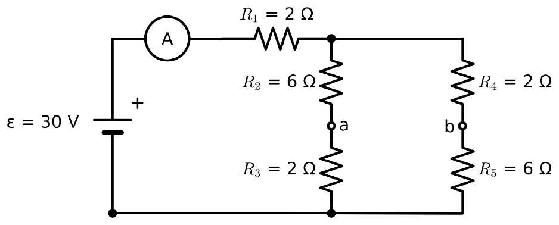
a) \(R_2\) y \(R_3\) están en serie (comparten el nodo a, al que no llega nada más), y lo mismo \(R_4\) y \(R_5\) (nodo b). Las dos ramas de 8 Ω quedan en paralelo entre el mismo par de nodos, y esa combinación queda en serie con \(R_1\): \(R_{eq} = 2 + 8 \parallel 8 = 6\ \Omega\), \(I = 5\) A.
b) Al nodo de arriba llegan \(30 - 5\cdot 2 = 20\) V y cada rama lleva 2,5 A. Midiendo desde abajo, \(V_a = 2{,}5\cdot 2 = 5\) V y \(V_b = 2{,}5\cdot 6 = 15\) V: \(V_a - V_b = -10\) V. b está a mayor potencial: en su rama, la resistencia de abajo es la grande y se lleva la mayor parte del voltaje.
c) Con a y b unidos: \(R_2 \parallel R_4 = 6 \parallel 2 = 1{,}5\ \Omega\) (arriba) y \(R_3 \parallel R_5 = 2 \parallel 6 = 1{,}5\ \Omega\) (abajo), en serie entre sí y con \(R_1\): \(R_{eq} = 2 + 1{,}5 + 1{,}5 = 5\ \Omega\), \(I = 6\) A, aumenta 20 %.
d) El punto unido queda a \(6\cdot 1{,}5 = 9\) V y el nodo de arriba a \(30 - 12 = 18\) V. Corrientes: \(R_2\): 1,5 A; \(R_4\): 4,5 A; \(R_3\): 4,5 A; \(R_5\): 1,5 A. En el nodo a entran 1,5 A por \(R_2\) y salen 4,5 A por \(R_3\), así que por el conductor llegan 3 A desde b: 3 A de b hacia a.
e) La lectura no cambia si a y b ya estaban al mismo potencial (puente balanceado): \(R_2/R_3 = R_4/R_5\), o sea \(R_4 = 6\cdot 6/2 = 18\ \Omega\).
Error común: decir que \(R_2\) y \(R_4\) están en paralelo antes de unir a y b. No lo están: no comparten los dos nodos.
La red puente de la figura se alimenta con 24 V entre A y B.
Usa el triángulo A, c, d. Con la corriente total, calcula la tensión del centro de la estrella y después vuelve a c y d por las ramas exteriores.
a) \(\Sigma = 36\ \Omega\): \(R_A = 2\), \(R_c = 6\), \(R_d = 3\ \Omega\). Ramas N–B: \(6 + 4 = 10\) y \(3 + 3 = 6\), en paralelo dan 3,75 Ω. \(R_{eq} = 2 + 3{,}75 = 5{,}75\ \Omega\).
b) \(I = 24/5{,}75 = 4{,}17\) A; \(P = 24\cdot 4{,}17 = 100{,}2\) W.
c) \(V_N = 24 - 2\cdot 4{,}174 = 15{,}65\) V. Rama c: \(15{,}65/10 = 1{,}565\) A, así que \(V_c = 4\cdot 1{,}565 = 6{,}26\) V. Rama d: \(15{,}65/6 = 2{,}609\) A, \(V_d = 3\cdot 2{,}609 = 7{,}83\) V. \(V_c - V_d = -1{,}57\) V; por 18 Ω circulan 0,087 A de d hacia c.
d) La estrella reproduce la relación V–I solo en los terminales A, c y d. Las corrientes internas del triángulo, como la de \(R_{cd}\), no existen en la estrella; se calculan con \(V_c\) y \(V_d\) en el circuito original.
Una LVK por malla, escrita con corrientes que ya cumplen la LCK por construcción.
Una corriente de malla es una corriente que circula por todo el contorno de una malla. En cada nodo entra y sale la misma corriente de malla, así que la LCK se cumple sola. Con eso, las únicas ecuaciones que faltan son las LVK, una por malla.
En una rama compartida circulan dos corrientes de malla en sentidos opuestos, y la corriente real es su diferencia. Por eso aparece \(R_3(I_1 - I_2)\) en la malla 1 y \(R_3(I_2 - I_1)\) en la malla 2.
Como el medio es óhmico, cada caída es lineal en las corrientes y el resultado es un sistema lineal \(\mathbf{R}\,\mathbf{I} = \mathbf{V}\). Por inspección: en la diagonal va la suma de resistencias de la malla y fuera de ella el negativo de la resistencia compartida (con todas las mallas horarias).
Signo de las fuentes, como en el Cap. 3: si la corriente de malla sale por el terminal +, la fuente aparece positiva al lado derecho. Si entra por el +, negativa.
Las fuentes de corriente cambian el procedimiento. Si la fuente está en una sola malla, fija esa corriente de malla. Si está en una rama compartida, no conoces su tensión: se escribe la LVK por el contorno exterior de ambas mallas (supermalla) y se agrega la restricción de la fuente.
Encuentra las corrientes de malla, la corriente en \(R_3\) y el balance de potencia.
Recorro en sentido horario desde abajo a la izquierda: subo por \(\varepsilon_1\), bajo en \(R_1\) y bajo en \(R_3\) con la corriente neta \(I_1 - I_2\).
$$10 - 2I_1 - 4(I_1 - I_2) = 0 \;\Rightarrow\; 6I_1 - 4I_2 = 10$$En la rama derecha \(I_2\) va hacia abajo, entra a \(\varepsilon_2\) por su terminal +: al cruzarla bajo 4 V.
$$-4(I_2 - I_1) - 6I_2 - 4 = 0 \;\Rightarrow\; -4I_1 + 10I_2 = -4$$Por \(R_3\) baja \(I_1 - I_2 = 1{,}545\) A.
\(\varepsilon_1\) entrega 19,09 W. \(\varepsilon_2\) absorbe \(4\cdot 0{,}364 = 1{,}45\) W (se carga). Resistencias: \(7{,}29 + 0{,}79 + 9{,}55 = 17{,}64\) W. Suma absorbida 19,09 W.
Sube ε₂ por sobre ~6,7 V con los valores iniciales: I₂ cambia de signo y ε₂ pasa de absorber a entregar energía.
Las preguntas marcadas con (lección) se refieren al ejemplo o a los pasos del PDF de la lección.
En el circuito de la figura, \(\varepsilon = 12\) V, \(R_1 = 2\ \Omega\), \(R_2 = 3\ \Omega\), \(R_3 = 1\ \Omega\), \(R_4 = 3\ \Omega\) y \(R_5 = 4\ \Omega\). La rama que separa la segunda y la tercera ventana tiene, además de \(R_4\), una fuente de voltaje dependiente de valor \(4i_x\) con el + hacia arriba, donde \(i_x\) es la corriente que baja por \(R_2\). En la rama derecha hay una fuente de corriente \(I_s = 2\) A hacia abajo.
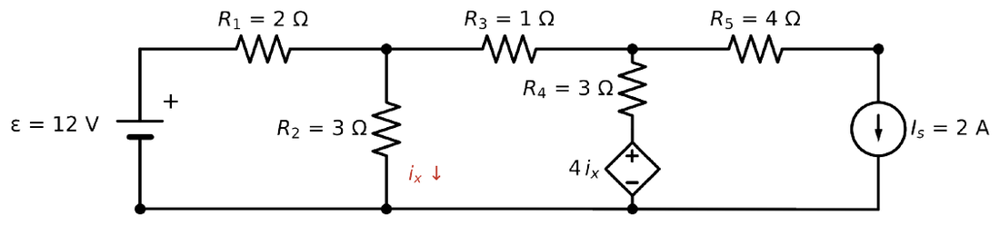
Los problemas 5, 6, 8 y 9 de tu Guía de Teoría de Circuitos tienen fuentes dependientes y traen la respuesta, así que sirven para seguir practicando.
a) Tres mallas en sentido horario. La fuente de corriente está en la rama exterior de la malla 3 y apunta en su mismo sentido, así que \(I_3 = I_s = 2\) A queda fija. Quedan dos incógnitas, \(I_1\) e \(I_2\), más la variable de control.
b) Malla 1: \(12 - 2I_1 - 3(I_1 - I_2) = 0\). Malla 2: \(-I_2 - 3(I_2 - I_3) - 4i_x - 3(I_2 - I_1) = 0\). Control: \(i_x = I_1 - I_2\). El término \(-4i_x\) aparece porque en la malla 2 la rama derecha se recorre hacia abajo, y la fuente dependiente tiene el + arriba: se atraviesa de + a −.
c) \(I_1 = 3\) A, \(I_2 = 1\) A, \(I_3 = 2\) A, \(i_x = 2\) A. Corrientes de rama: \(R_1\): 3 A; \(R_2\): 2 A hacia abajo; \(R_3\): 1 A; rama de \(R_4\) y la dependiente: \(I_2 - I_3 = -1\), o sea 1 A hacia arriba; \(R_5\) e \(I_s\): 2 A.
d) LVK de la malla 3, con \(V_s\) = voltaje de arriba respecto de abajo en la fuente de corriente: \(-4(2) - V_s + 4i_x - 3(I_3 - I_2) = 0 \Rightarrow -8 - V_s + 8 - 3 = 0 \Rightarrow V_s = -3\) V. El terminal de abajo está 3 V más alto. Los 2 A entran por el terminal de menor potencial y salen por el de mayor, así que la fuente de corriente entrega \(2\cdot 3 = 6\) W. La dependiente vale 8 V y la corriente sale por su +: entrega 8 W. La fuente de 12 V entrega 36 W.
e) Entregado: \(36 + 8 + 6 = 50\) W. Disipado: \(R_1\): 18; \(R_2\): 12; \(R_3\): 1; \(R_4\): 3; \(R_5\): 16. Total 50 W.
En el circuito, la fuente de corriente de 3 A está en la rama compartida por ambas mallas y apunta de x hacia y.
En la rama compartida, \(I_1\) va hacia abajo e \(I_2\) hacia arriba. La fuente fija la corriente neta hacia abajo.
a) La tensión en la fuente de corriente es desconocida: depende del resto del circuito. Cada LVK por separado tendría una incógnita extra.
b) Restricción: \(I_1 - I_2 = 3\). Supermalla por el contorno exterior: \(30 - 4I_1 - 6I_2 - 2I_1 = 0\). Reemplazando, \(30 = 6(I_2 + 3) + 6I_2 \Rightarrow I_2 = 1\) A, \(I_1 = 4\) A.
c) Por la rama derecha: \(V_x - V_y = 6\cdot I_2 = 6\) V. La corriente de la fuente va de x (a 6 V) hacia y dentro de ella, entrando por el punto de mayor potencial: absorbe \(6\cdot 3 = 18\) W.
d) La fuente de 30 V entrega \(30\cdot 4 = 120\) W. Absorben: \(16\cdot 6 = 96\) W (4 Ω y 2 Ω), \(6\) W (6 Ω) y 18 W (fuente de corriente). Total 120 W.
Elige una tierra, asigna un potencial a cada nodo y escribe una LCK por nodo. La LVK se cumple sola.
Si asignas un potencial único a cada nodo, cualquier suma de diferencias de potencial alrededor de un lazo da cero automáticamente: el método de nodos lleva la LVK incorporada. Con eso, faltan solo las LCK, una por cada nodo que no sea tierra.
Cada corriente se escribe con la ley de Ohm a partir de los potenciales: por una resistencia entre los nodos i y j sale del nodo i la corriente \((V_i - V_j)/R\). El sistema queda \(\mathbf{G}\,\mathbf{V} = \mathbf{I}\), con conductancias en la diagonal y el negativo de la conductancia compartida fuera de ella.
Las fuentes de tensión son el caso especial. Si una fuente va de un nodo a tierra, fija ese potencial. Si va entre dos nodos de no referencia, su corriente es desconocida. Ahí se encierran ambos nodos en una superficie (supernodo, la misma idea del módulo 2.3), se escribe una sola LCK para toda la superficie y se agrega \(V_1 - V_2 = \varepsilon\).
¿Mallas o nodos? Cuenta ecuaciones. Mallas necesita una por malla; nodos, una por nodo menos uno. Elige el que dé menos, y prefiere nodos si hay muchas fuentes de corriente.
Encuentra \(V_1\), \(V_2\) y la corriente en \(R_c\), con su sentido.
Corrientes saliendo del nodo 1: hacia la fuente por \(R_a\), a tierra por \(R_b\) y hacia el nodo 2 por \(R_c\). No hay fuentes de corriente en el nodo.
$$\frac{V_1 - 20}{4} + \frac{V_1}{4} + \frac{V_1 - V_2}{2} = 0$$De la primera, \(V_1 = 5 + V_2/2\). En la segunda: \(-\tfrac{5}{2} - \tfrac{V_2}{4} + \tfrac{3V_2}{4} = 3\), así que \(V_2 = 11\) V y \(V_1 = 10{,}5\) V.
$$I_{R_c,\,1\to2} = \frac{10{,}5 - 11}{2} = -0{,}25\ \mathrm{A}$$El signo negativo dice que la corriente va de 2 hacia 1. No hay que corregir nada, solo interpretarlo.
Fuente de tensión: \(20\cdot 2{,}375 = 47{,}5\) W. Fuente de corriente: \(3\cdot 11 = 33\) W. Resistencias: \(22{,}56 + 27{,}56 + 0{,}125 + 30{,}25 = 80{,}5\) W.
Las filas de LCK siempre suman cero: es la conservación de la carga verificada numéricamente.
Las preguntas marcadas con (lección) se refieren al ejemplo o a los pasos del PDF de la lección.
En el circuito de la figura, la fuente \(\varepsilon = 20\) V va del nodo A a tierra, con el + en A. Entre los nodos B y C hay una fuente \(V_s = 4\) V con el + en B. Las resistencias son \(R_1 = 4\ \Omega\) (entre A y B), \(R_2 = 8\ \Omega\) (entre B y tierra), \(R_3 = 3\ \Omega\) (entre C y tierra) y \(R_4 = 2\ \Omega\) (entre A y C). La fuente de corriente \(I_s = 1\) A inyecta corriente desde tierra hacia el nodo C.
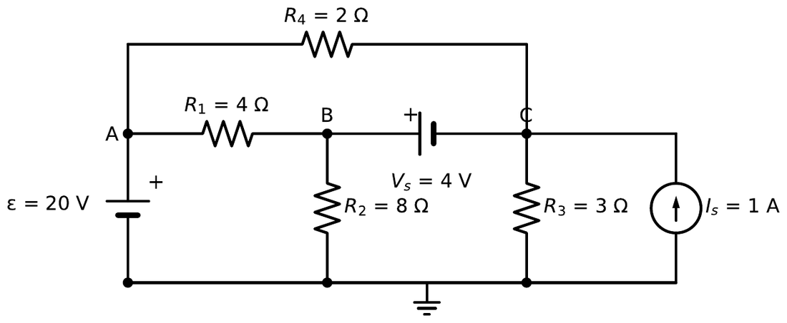
a) Referencia en el cable de abajo. \(V_A = 20\) V queda fijo por \(\varepsilon\). \(V_B\) y \(V_C\) están unidos por \(V_s\), así que solo queda una incógnita independiente.
b) Restricción: \(V_B - V_C = 4\). LCK del supernodo (B y C juntos), con lo que sale igual a lo que entra por \(I_s\): \(\dfrac{V_B - 20}{4} + \dfrac{V_B}{8} + \dfrac{V_C}{3} + \dfrac{V_C - 20}{2} = 1\). No se puede escribir la LCK de B sola, porque no se conoce la corriente de la fuente \(V_s\).
c) Reemplazando \(V_B = V_C + 4\): \(V_C = 12\) V y \(V_B = 16\) V. Corrientes: \(R_1\): 1 A de A hacia B; \(R_4\): 4 A de A hacia C; \(R_2\): 2 A hacia tierra; \(R_3\): 4 A hacia tierra.
d) En B entra 1 A por \(R_1\) y salen 2 A por \(R_2\): llega 1 A por \(V_s\) desde C. Atraviesa la fuente de − a +, así que \(V_s\) entrega \(4\cdot 1 = 4\) W. \(\varepsilon\) entrega \(1 + 4 = 5\) A, o sea 100 W. \(I_s\) lleva 1 A de 0 V a 12 V: entrega 12 W.
e) Entregado: \(100 + 4 + 12 = 116\) W. Disipado: \(4 + 32 + 48 + 32 = 116\) W. Por mallas habría 4 mallas (7 ramas, 4 nodos) y una supermalla; por nodos queda una sola incógnita. Conviene nodos.
En el circuito, la fuente de 8 V está conectada entre los nodos 1 y 2, ninguno de los cuales es tierra.
La superficie que encierra los nodos 1 y 2 corta cuatro ramas: la fuente de 2 A, la de 4 Ω del nodo 1, la de 8 Ω y la de 4 Ω que va a la fuente de 12 V.
a) Supernodo: \(\dfrac{V_1}{4} + \dfrac{V_2}{8} + \dfrac{V_2 - 12}{4} = 2\) y \(V_1 - V_2 = 8\). Reemplazando \(V_1 = V_2 + 8\): \(0{,}625\,V_2 = 3\), así que \(V_2 = 4{,}8\) V y \(V_1 = 12{,}8\) V.
b) LCK solo en el nodo 1: llegan 2 A y salen \(12{,}8/4 = 3{,}2\) A a tierra, así que por la fuente llegan 1,2 A desde el nodo 2. La corriente cruza la fuente de − a +.
c) Fuente de 8 V: entrega \(8\cdot 1{,}2 = 9{,}6\) W. Fuente de 12 V: su corriente es \((12 - 4{,}8)/4 = 1{,}8\) A saliendo por el +, entrega 21,6 W. Fuente de 2 A: entrega \(2\cdot 12{,}8 = 25{,}6\) W.
d) Entregada: 56,8 W. Resistencias: \(40{,}96 + 2{,}88 + 12{,}96 = 56{,}8\) W.
Una red lineal, vista desde dos terminales, se comporta como una fuente con una resistencia en serie.
En un medio óhmico \(\vec J = \sigma\vec E\) es lineal, y las ecuaciones de campo electrostático también lo son. Si duplicas todas las fuentes, se duplican todos los campos y todas las corrientes. Si tienes dos fuentes, la respuesta es la suma de las respuestas a cada una por separado: superposición.
Consecuencia directa: vista desde los terminales a–b, la relación entre tensión y corriente de cualquier red lineal es una recta, \(V = V_{th} - R_{th}I\). Una recta queda definida por dos puntos: la tensión en circuito abierto (\(V_{th}\)) y la corriente en cortocircuito (\(I_N\)), con \(R_{th} = V_{th}/I_N\).
Apagar una fuente significa dejar su valor en cero: una fuente de tensión apagada es un cortocircuito y una de corriente apagada es un circuito abierto. Las fuentes dependientes nunca se apagan.
Máxima transferencia: \(P_L = V_{th}^2R_L/(R_{th} + R_L)^2\). Derivando e igualando a cero sale \(R_L = R_{th}\) y \(P_{\max} = V_{th}^2/(4R_{th})\). La eficiencia del equivalente es 50 %, pero la de la red real puede ser otra.
Encuentra el equivalente de Thévenin entre a y b, el de Norton, y la potencia que recibe una carga de 2 Ω. ¿Qué carga recibe la máxima potencia?
Con a–b abierto, por \(R_3\) no circula corriente y no cae tensión. \(V_{ab}\) es la tensión en \(R_2\), un divisor de tensión:
$$V_{th} = 24\,\frac{3}{6 + 3} = 8\ \mathrm{V}$$Apago la fuente (cortocircuito). Desde a–b veo \(R_3\) en serie con \(R_1 \parallel R_2\):
$$R_{th} = 2 + \frac{6\cdot 3}{6 + 3} = 4\ \Omega, \qquad I_N = \frac{8}{4} = 2\ \mathrm{A}$$La máxima potencia es con \(R_L = 4\ \Omega\): \(P_{\max} = 64/16 = 4\) W.
Cambia R₃ y observa cómo se corre el máximo: R₃ no afecta V_th, solo R_th.
En la red de la figura, \(\varepsilon = 24\) V, \(R_1 = 12\ \Omega\), \(R_2 = 6\ \Omega\) y \(R_3 = 4\ \Omega\). La fuente \(I_s = 1{,}5\) A inyecta corriente desde tierra hacia el terminal a.
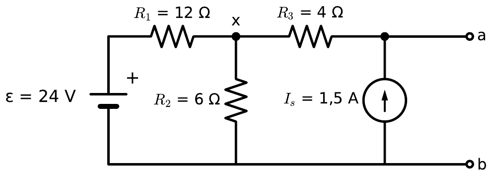
a) Solo \(\varepsilon\) (\(I_s\) abierta): por \(R_3\) no pasa corriente y \(V_a = V_x\), un divisor de voltaje: \(24\cdot 6/18 = 8\) V. Solo \(I_s\) (\(\varepsilon\) en corto): los 1,5 A recorren \(R_3\) y después \(12 \parallel 6 = 4\ \Omega\), así que \(V_a = 1{,}5\cdot(4 + 4) = 12\) V. \(V_{th} = 8 + 12 = 20\) V.
b) Con las fuentes apagadas: \(R_{th} = R_3 + R_1 \parallel R_2 = 4 + 4 = 8\ \Omega\). Con el cortocircuito, a queda a 0 V y \(R_3\) pasa a estar entre x y tierra; \(I_s\) inyecta sus 1,5 A directo en el corto. LCK en x: \(\dfrac{V_x - 24}{12} + \dfrac{V_x}{6} + \dfrac{V_x}{4} = 0 \Rightarrow V_x = 4\) V. Por \(R_3\) llegan al corto 1 A, que se suman a los 1,5 A: \(I_{cc} = 2{,}5\) A y \(V_{th}/I_{cc} = 8\ \Omega\).
c) Norton: \(I_N = 2{,}5\) A en paralelo con \(R_N = 8\ \Omega\).
d) \(R_L = R_{th} = 8\ \Omega\). \(P_{\max} = 20^2/(4\cdot 8) = 12{,}5\) W.
e) Con \(R_L = 8\ \Omega\): \(I_L = 20/16 = 1{,}25\) A y \(V_a = 10\) V. Por \(R_3\) pasan \(1{,}5 - 1{,}25 = 0{,}25\) A de a hacia x, así que \(V_x = 10 - 1 = 9\) V. La fuente \(\varepsilon\) entrega \((24 - 9)/12 = 1{,}25\) A, o sea 30 W, e \(I_s\) entrega \(1{,}5\cdot 10 = 15\) W. Total 45 W para 12,5 W en la carga: \(\eta = 12{,}5/45 \approx 27{,}8\ \%\). El 50 % vale para el equivalente de Thévenin, que solo reproduce lo que pasa en los terminales. Las pérdidas internas reales (32,5 W) son distintas de las de \(R_{th}\).
Error común: en el cortocircuito, olvidar que \(R_3\) queda en paralelo con \(R_2\) al escribir la LCK en x.
Para la red de la figura, vista desde los terminales a–b:
Para \(V_{th}\) basta una LCK en el nodo de arriba. Para \(R_{th}\), la fuente de corriente apagada es un circuito abierto.
a) \(\dfrac{V_a - 12}{4} + \dfrac{V_a}{12} = 2 \Rightarrow V_a\cdot\dfrac{1}{3} = 5 \Rightarrow V_{th} = 15\) V.
b) Con 12 V en corto y 2 A abierta: \(R_{th} = 4 \parallel 12 = 3\ \Omega\). \(I_N = 5\) A.
c) \(R_L = 3\ \Omega\), \(P_{\max} = 225/12 = 18{,}75\) W.
d) Con la carga, \(V_a = 7{,}5\) V. La fuente de 12 V entrega \(12\cdot(12 - 7{,}5)/4 = 13{,}5\) W y la de 2 A entrega \(2\cdot 7{,}5 = 15\) W: total 28,5 W. La carga recibe 65,8 %. El 50 % vale para el equivalente; la disipación interna de la red real (4,69 W en 12 Ω y 5,06 W en 4 Ω) no tiene por qué coincidir con la de \(R_{th}\).
El flash de una cámara carga un condensador durante segundos y lo descarga en milisegundos. La constante de tiempo explica ambas cosas.
Un capacitor guarda carga \(+Q\) y \(-Q\) en dos conductores. Entre ellos aparece un campo y una diferencia de potencial proporcional a la carga: \(Q = Cv_C\). La capacitancia depende solo de la geometría y del dieléctrico (Cap. 4).
Al cerrar el interruptor con el capacitor descargado, \(v_C = 0\) y toda la tensión de la fuente cae en \(R\): la corriente arranca en \(V/R\). Cada carga que llega a la placa aumenta \(v_C\), queda menos tensión para \(R\) y la corriente baja. Ese frenado proporcional da una exponencial. La LVK con \(i = dq/dt\):
$$V = R\frac{dq}{dt} + \frac{q}{C} \;\Longrightarrow\; v_C(t) = V\left(1 - e^{-t/RC}\right)$$La tensión del capacitor no puede saltar, porque eso exigiría corriente infinita. Esa es la condición inicial que usas en todos los ejercicios. En régimen permanente DC el capacitor no deja pasar corriente y se comporta como circuito abierto.
Energía: el capacitor guarda \(\tfrac12 CV^2\) en el campo eléctrico, con densidad \(\tfrac12\varepsilon E^2\). La fuente entrega \(QV = CV^2\) durante la carga, así que la resistencia disipa la otra mitad, sea cual sea el valor de R.
Con el capacitor descargado se cierra el interruptor en \(t = 0\). Calcula \(\tau\), \(v_C\) e \(i\) en \(t = 2\) s, la energía final almacenada y la energía disipada en R durante la carga completa.
Tres datos y listo: \(v_C(0^+) = 0\) porque no puede saltar; \(v_C(\infty) = 12\) V porque el capacitor queda abierto y en R no cae nada; \(\tau = RC\).
La fuente entrega \(CV^2 = 14{,}4\) mJ. La mitad queda en el campo y la otra mitad, 7,2 mJ, se disipa en R.
En t = τ el capacitor llega al 63,2 % y en t = 5τ al 99,3 %. Esas dos cifras se usan para estimar respuestas sin calculadora.
Las preguntas marcadas con (lección) se refieren al ejemplo o a los pasos del PDF de la lección.
En el circuito de la figura, el interruptor S estuvo mucho tiempo en la posición a. En \(t = 0\) pasa a la posición b. Los datos son \(\varepsilon = 20\) V, \(R_1 = 10\) kΩ, \(C = 50\ \mu\)F y \(R_2 = R_3 = 20\) kΩ. En la posición a el capacitor se carga; en la posición b se descarga sobre \(R_2\) y \(R_3\).
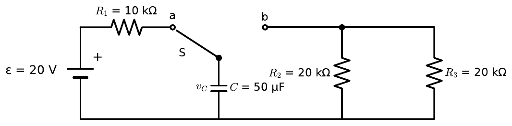
a) \(v_C(0^-) = 20\) V: después de mucho tiempo en a, el capacitor es un circuito abierto, no circula corriente y no cae voltaje en \(R_1\). Para que eso se cumpla, S debió estar en a al menos \(5\tau_{carga} = 5\cdot 10^{4}\cdot 50\times10^{-6} = 2{,}5\) s.
b) El voltaje no salta: \(v_C(0^+) = 20\) V. En b el capacitor ve \(R_2 \parallel R_3 = 10\) kΩ: \(i(0^+) = 20/10^{4} = 2\) mA, 1 mA por cada resistencia. Un salto de voltaje exigiría que la energía \(\tfrac12 Cv^2\) cambiara en un instante, con potencia infinita.
c) \(\tau = 10^{4}\cdot 50\times10^{-6} = 0{,}5\) s. El valor final es 0: \(v_C(t) = 20\,e^{-t/0{,}5} = 20\,e^{-2t}\) V.
d) \(5 = 20\,e^{-2t}\), de donde \(t = 0{,}5\ln 4 \approx 0{,}693\) s.
e) Energía inicial: \(\tfrac12\cdot 50\times10^{-6}\cdot 20^2 = 10\) mJ, que se disipa toda. Como \(R_2 = R_3\) tienen el mismo voltaje, se reparte en partes iguales: 5 mJ en \(R_2\).
El capacitor de 50 µF está descargado y el interruptor se cierra en \(t = 0\).
Para \(\tau\), mira la resistencia que ve el capacitor con la fuente apagada.
a) \(v_C(0^+) = 0\). En régimen permanente C está abierto y queda un divisor: \(v_C(\infty) = 18\cdot 3/9 = 6\) V. Con la fuente en corto, C ve \(6\,\mathrm{k} \parallel 3\,\mathrm{k} = 2\) kΩ: \(\tau = 2000\cdot 50\times10^{-6} = 0{,}1\) s.
b) \(v_C(t) = 6(1 - e^{-10t})\) V; \(v_C(0{,}2) = 6(1 - e^{-2}) = 5{,}19\) V.
c) En \(0^+\) el capacitor es un corto: \(i_{R_1} = 18/6\,\mathrm{k} = 3\) mA (y por \(R_2\) no circula nada). En \(\infty\): \(18/9\,\mathrm{k} = 2\) mA.
d) \(W = \tfrac12\cdot 50\times10^{-6}\cdot 36 = 0{,}9\) mJ.
El sistema de encendido de un auto corta la corriente de una bobina y obtiene miles de volts. Faraday explica por qué.
Una corriente en una bobina crea un campo magnético y un flujo enlazado \(\lambda = Li\). La inductancia, igual que la capacitancia, depende de la geometría y del material (Cap. 7). Si la corriente cambia, cambia el flujo y por la ley de Faraday aparece una fem inducida que se opone al cambio (Lenz):
$$v_L = \frac{d\lambda}{dt} = L\frac{di}{dt}$$Aquí el campo eléctrico inducido no es conservativo: \(\oint \vec E\cdot d\vec l = -d\Phi/dt \neq 0\). La LVK se sigue usando porque el efecto queda concentrado en la bobina y se modela como una caída \(L\,di/dt\) en sus terminales.
Consecuencia práctica: la corriente en un inductor no puede saltar, porque eso exigiría tensión infinita. Al cerrar el interruptor la corriente arranca en cero y crece con \(\tau = L/R\). En régimen permanente DC, \(di/dt = 0\) y el inductor es un cortocircuito.
Energía: el inductor guarda \(\tfrac12 Li^2\) en el campo magnético, con densidad \(B^2/(2\mu)\). Si abres el circuito de golpe, esa energía busca salir: el \(di/dt\) enorme produce la chispa en el interruptor o en la bujía.
Se cierra el interruptor en \(t = 0\) con el inductor sin corriente. Calcula \(\tau\), la corriente final, \(i(\tau)\), \(v_L(0^+)\) y la energía final almacenada.
\(i(0^+) = 0\) porque no puede saltar. Entonces en \(0^+\) no cae nada en R y toda la fuente queda en L: \(v_L(0^+) = 12\) V. En régimen permanente L es un corto: \(i(\infty) = V/R\).
Aumenta R: la corriente final baja y el transitorio se acorta, porque τ = L/R. En el RC pasa lo contrario: más R alarga τ.
Las preguntas marcadas con (lección) se refieren al ejemplo o a los pasos del PDF de la lección.
En el circuito de la figura, el interruptor estuvo cerrado mucho tiempo y se abre en \(t = 0\). La fuente es de 12 V, \(R_1 = 4\ \Omega\), \(L = 0{,}2\) H y \(R_2 = 60\ \Omega\), conectada en paralelo con el inductor. Al abrir el interruptor, la bobina queda conectada solo a \(R_2\).
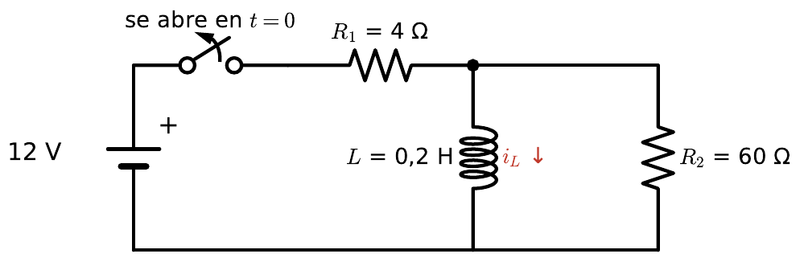
a) En régimen permanente el inductor es un cable: \(i_L(0^-) = 12/4 = 3\) A. \(R_2\) queda en cortocircuito y no lleva corriente.
b) \(i_L(0^+) = 3\) A. La corriente no puede saltar, porque la energía \(\tfrac12 Li^2\) no puede cambiar en un instante.
c) Los 3 A del inductor ahora solo pueden volver por \(R_2\): \(|v| = 3\cdot 60 = 180\) V. El inductor empuja la corriente hacia abajo, y por \(R_2\) esa corriente sube. El extremo de abajo de \(R_2\) queda 180 V por encima del de arriba, con polaridad invertida respecto de la fuente. El valor sale de la energía guardada en la bobina, no de la fuente: es la corriente de antes obligada a pasar por una resistencia grande.
d) \(\tau = 0{,}2/60 \approx 3{,}33\) ms y \(i_L(t) = 3\,e^{-t/0{,}00333}\) A. Para 1 A: \(t = \tau\ln 3 \approx 3{,}66\) ms.
e) Se disipa toda la energía inicial: \(\tfrac12\cdot 0{,}2\cdot 3^2 = 0{,}9\) J en \(R_2\). Sin \(R_2\), la corriente se cortaría casi en cero tiempo; \(L\,di/dt\) sería enorme, el aire del interruptor se rompería y la energía se disiparía en un arco. Es la chispa de la aspiradora.
El interruptor se cierra en \(t = 0\) y el inductor no tiene corriente inicial.
En \(0^+\) el inductor se comporta como circuito abierto; en \(\infty\), como cortocircuito, y deja a \(R_2\) en corto.
a) \(i_L(0^+) = 0\): L abierto. \(i_{R_1} = i_{R_2} = 36/16 = 2{,}25\) A y \(v_L = v_{R_2} = 2{,}25\cdot 12 = 27\) V.
b) L en corto: \(i_{R_1} = 36/4 = 9\) A, \(i_{R_2} = 0\), \(i_L = 9\) A.
c) Con la fuente en corto, L ve \(4 \parallel 12 = 3\ \Omega\): \(\tau = 0{,}5/3 = 0{,}167\) s. \(i_L(t) = 9(1 - e^{-6t})\) A; \(i_L(0{,}1) = 4{,}06\) A.
d) \(W = \tfrac12\cdot 0{,}5\cdot 81 = 20{,}25\) J.
Cuando la sección cambia a lo largo del camino de la corriente, R = L/(σS) deja de servir y hay que integrar.
El procedimiento que pide el Cap. 3 tiene cuatro pasos y conviene hacerlos siempre en el mismo orden. Supones una corriente total \(I\). Por continuidad, esa misma \(I\) atraviesa cada superficie perpendicular al flujo, así que \(J = I/S(r)\). Con la ley de Ohm, \(E = J/\sigma\). Integras \(E\) entre los electrodos para obtener \(V\), y finalmente \(R = V/I\), donde \(I\) se cancela.
En un coaxial con material resistivo entre los conductores, la corriente sale radial del conductor interno. Atraviesa cilindros de área \(2\pi r L\), que crecen con \(r\). Cerca del conductor interno la corriente se apretuja en un área pequeña, por lo que \(J\) y \(E\) son mayores ahí:
$$J = \frac{I}{2\pi r L}, \quad E = \frac{I}{2\pi\sigma r L}, \quad V = \int_a^b E\,dr = \frac{I}{2\pi\sigma L}\ln\frac{b}{a}$$El mismo esquema, cambiando conductividad por permitividad, da la capacitancia del módulo 2.12. Por eso \(RC = \varepsilon/\sigma\) para cualquier geometría con el mismo material.
Un cable coaxial de 1 m tiene conductor interno de radio 1 mm, externo de radio 4 mm, y entre ellos un aislante imperfecto con \(\sigma = 10^{-4}\) S/m. Calcula la resistencia de fuga, la corriente de fuga con 100 V y el campo en ambos bordes.
La corriente de fuga es radial. Aplico la cadena \(I \to J \to E \to V\) con área \(2\pi r L\).
El campo es cuatro veces mayor en el borde interno (la razón \(b/a\)). Si el aislante se perfora, lo hace cerca del conductor central.
R crece con el logaritmo de b/a: duplicar b no duplica R. Para el largo pasa lo contrario que en un cable: más largo, menos resistencia, porque la corriente tiene más área para salir.
Las preguntas marcadas con (lección) se refieren al ejemplo o a los pasos del PDF de la lección.
La puesta a tierra de una subestación se modela como un electrodo metálico en forma de semiesfera de radio \(a = 0{,}5\) m, enterrado con la cara plana a ras de suelo. El suelo tiene conductividad uniforme \(\sigma = 0{,}01\) S/m. Cuando hay una falla, entra por el electrodo una corriente \(I = 1000\) A que se reparte por el suelo en dirección radial. En la figura, las líneas azules son equipotenciales y las rojas marcan el largo de un paso.
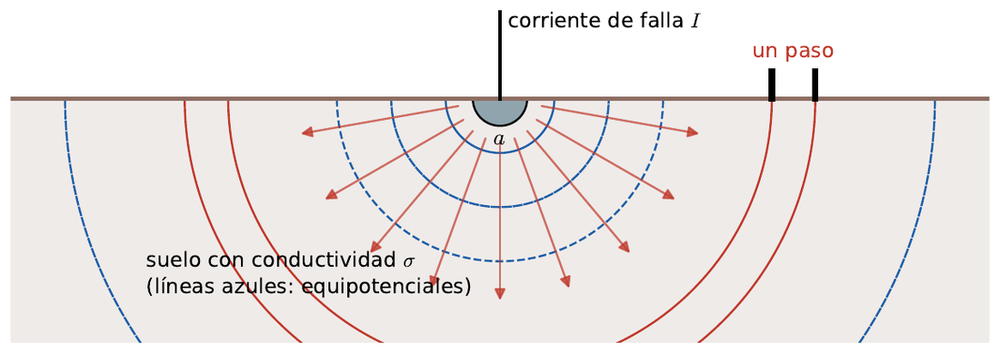
a) La corriente sale del electrodo en dirección radial y atraviesa casquetes semiesféricos uno tras otro: la misma \(I\) cruza todos, así que están en serie. El área de una semiesfera de radio \(r\) es \(2\pi r^2\): \(dR = \dfrac{dr}{\sigma\cdot 2\pi r^2}\).
b) \(R = \dfrac{1}{2\pi\sigma}\left(\dfrac1a - \dfrac1b\right) \xrightarrow{b\to\infty} R = \dfrac{1}{2\pi\sigma a} = \dfrac{1}{2\pi\cdot 0{,}01\cdot 0{,}5} \approx 31{,}8\ \Omega\).
c) \(\dfrac{1/a - 1/2}{1/a} = \dfrac{2 - 0{,}5}{2} = 0{,}75\). El 75 % de la resistencia está en los primeros 2 m. Conviene mejorar el suelo cerca del electrodo, con relleno conductor; mejorar el suelo lejano casi no cambia nada.
d) \(J = I/(2\pi r^2)\), \(E = J/\sigma\) e integrando desde el infinito, \(V(r) = \dfrac{I}{2\pi\sigma r}\). Potencial del electrodo: \(V(a) = 1000\cdot 31{,}8 \approx 31{,}8\) kV. Voltaje de paso: \(V(5) - V(5{,}8) = \dfrac{1000}{2\pi\cdot 0{,}01}\left(\dfrac15 - \dfrac{1}{5{,}8}\right) \approx 439\) V.
e) \(\dfrac{1}{2\pi\sigma a} \le 10\), o sea \(a \ge \dfrac{1}{2\pi\cdot 0{,}01\cdot 10} \approx 1{,}59\) m.
Dos cascarones esféricos conductores concéntricos, de radios \(a = 2\) cm y \(b = 6\) cm, tienen el espacio entre ellos lleno con un material de \(\sigma = 0{,}01\) S/m. Se aplican 100 V entre ellos.
La superficie que atraviesa la corriente a radio \(r\) es una esfera completa.
a) \(J = I/(4\pi r^2)\), \(E = I/(4\pi\sigma r^2)\), \(V = \int_a^b E\,dr = \dfrac{I}{4\pi\sigma}\left(\dfrac1a - \dfrac1b\right)\), así que \(R = \dfrac{1}{4\pi\sigma}\left(\dfrac1a - \dfrac1b\right)\).
b) \(R = (50 - 16{,}67)/(4\pi\cdot 0{,}01) = 265{,}3\ \Omega\); \(I = 100/265{,}3 = 0{,}377\) A.
c) \(J(3\ \mathrm{cm}) = 0{,}377/(4\pi\cdot 9\times10^{-4}) = 33{,}3\) A/m²; \(E = J/\sigma = 3333\) V/m.
d) \(P = V^2/R = 37{,}7\) W.
Un dieléctrico se polariza, reduce el campo para la misma carga y aumenta la capacitancia. Las capas se combinan en serie o en paralelo según cómo las cruce el campo.
Las moléculas del dieléctrico se orientan con el campo y dejan carga ligada en sus superficies, opuesta a la de las placas. Esa carga ligada debilita el campo adentro. Para describirlo sin seguir la carga ligada se usa \(\vec D = \varepsilon_0\varepsilon_r\vec E\), que depende solo de la carga libre: \(\oint \vec D\cdot d\vec S = Q_{libre}\).
Lámina paralela a las placas: el campo cruza ambas capas una tras otra. En la interfaz no hay carga libre, así que \(D\) es continuo y \(E_{aire} = \varepsilon_r E_{diel}\). Las tensiones de cada capa se suman: son capacitores en serie.
Lámina que ocupa parte del área, de placa a placa: ambas regiones ven la misma tensión y el mismo \(E = V/d\), pero el dieléctrico necesita \(\varepsilon_r\) veces más carga libre. Son capacitores en paralelo.
Pregunta de certamen frecuente: en la configuración en serie, ¿dónde es mayor el campo? En el aire. Por eso los capacitores con una capa de aire delgada fallan por ruptura del aire, aunque el dieléctrico aguante.
Placas de 0,01 m² separadas 2 mm. Una lámina de \(\varepsilon_r = 4\) y 1 mm de espesor está apoyada en la placa inferior; el resto es aire. Se aplican 12 V. Calcula C y el campo en cada región.
El campo cruza aire y dieléctrico en serie. Uso la continuidad de \(D\) y la suma de tensiones: \(E_{aire}(d - t) + E_{diel}\,t = V\) con \(E_{aire} = 4E_{diel}\).
De los 12 V, 9,6 V caen en el milímetro de aire y 2,4 V en el dieléctrico. Sin lámina, C sería 44,3 pF: la lámina aumenta C en un factor 1,6.
Placas de 0,01 m² separadas 2 mm. La densidad de líneas es proporcional a E: en el dieléctrico hay εr veces menos.
Las preguntas marcadas con (lección) se refieren al ejemplo o a los pasos del PDF de la lección.
Un capacitor esférico tiene un conductor interior de radio \(a = 1\) cm y uno exterior de radio \(b = 4\) cm. Entre \(r = a\) y \(r = c = 2\) cm hay un dieléctrico con \(\varepsilon_r = 4\); entre \(r = c\) y \(r = b\) hay aire. Se aplica un voltaje \(V = 1\) kV entre los conductores.
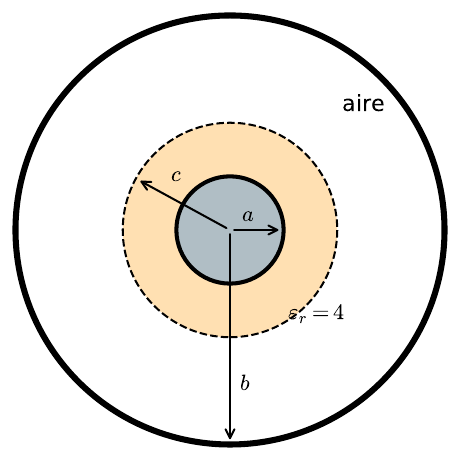
a) Con una gaussiana esférica de radio \(r\), la ley de Gauss para \(\vec D\) da \(D = Q/(4\pi r^2)\) en ambas capas. Entonces \(E = \dfrac{Q}{4\pi\varepsilon_0\varepsilon_r r^2}\) (\(a < r < c\)) y \(E = \dfrac{Q}{4\pi\varepsilon_0 r^2}\) (\(c < r < b\)). En \(r = c\) el campo salta un factor \(\varepsilon_r\), por la carga inducida en la cara exterior del dieléctrico.
b) Integrando \(E\) de \(a\) a \(b\): \(V = \dfrac{Q}{4\pi\varepsilon_0}\left[\dfrac{1}{\varepsilon_r}\left(\dfrac1a - \dfrac1c\right) + \dfrac1c - \dfrac1b\right]\), así que \(C = \dfrac{4\pi\varepsilon_0}{12{,}5 + 25} \approx 2{,}97\) pF. Equivale a dos capacitores esféricos en serie: el dieléctrico (\(a\) a \(c\)), \(C_1 \approx 8{,}90\) pF, y el aire (\(c\) a \(b\)), \(C_2 \approx 4{,}45\) pF. \(C_1C_2/(C_1 + C_2) = 2{,}97\) pF.
c) \(Q = CV \approx 2{,}97\) nC. Como están en serie tienen la misma carga y el voltaje se reparte en proporción inversa a la capacitancia: \(V_1 \approx 333\) V en el dieléctrico y \(V_2 \approx 667\) V en el aire. El aire se lleva dos tercios porque su capacitancia es la menor.
d) En cada capa el campo es máximo en su radio interior. Dieléctrico, en \(r = a\): \(E \approx 66{,}7\) kV/m. Aire, en \(r = c\): \(E \approx 66{,}7\) kV/m. Como el campo es proporcional a \(V\), el aire se rompe con \(V = 1000\cdot 3\times10^{6}/66\,700 = 45\) kV y el dieléctrico se rompería con 300 kV: se rompe primero el aire, con \(V \approx 45\) kV.
e) \(W = \tfrac12 CV^2 \approx 1{,}48\ \mu\)J. En \(r = a\) la carga libre es \(\rho_s = Q/(4\pi a^2) \approx 2{,}36\ \mu\)C/m², y la inducida en la cara interior del dieléctrico es \(\rho_{ind} = \dfrac{\varepsilon_r - 1}{\varepsilon_r}\rho_s = 0{,}75\cdot 2{,}36 \approx 1{,}77\ \mu\)C/m², con signo negativo, porque está junto al conductor positivo.
Un condensador de placas paralelas de 0,02 m² y separación 1 mm tiene la mitad de su área ocupada por un dieléctrico de \(\varepsilon_r = 5\) que va de placa a placa. La otra mitad es aire. Se conecta a 100 V.
Ambas regiones conectan directamente las dos placas: ¿qué tienen en común?
a) Paralelo. Ambas regiones van de placa a placa, así que tienen la misma tensión y el mismo \(E = V/d\).
b) \(C = \dfrac{8{,}854\times10^{-12}}{10^{-3}}(5\cdot 0{,}01 + 0{,}01) = 531\) pF; \(W = \tfrac12 CV^2 = 2{,}66\ \mu\)J.
c) \(E = 100/10^{-3} = 10^{5}\) V/m en ambas. \(\rho_s = \varepsilon_0\varepsilon_r E\): 4,43 µC/m² frente al dieléctrico y 0,885 µC/m² frente al aire.
d) \(\rho_{s,b} = (5 - 1)\varepsilon_0\cdot 10^{5} = 3{,}54\) µC/m², de signo opuesto a la placa vecina.